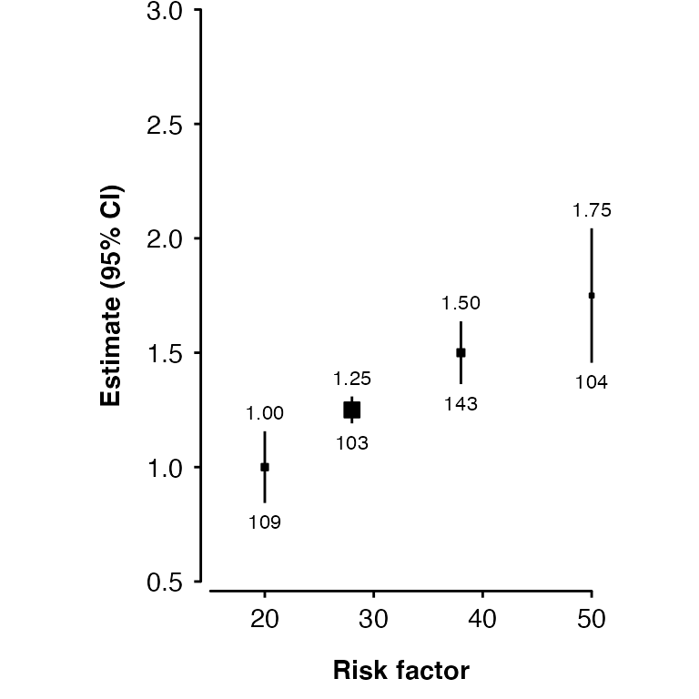
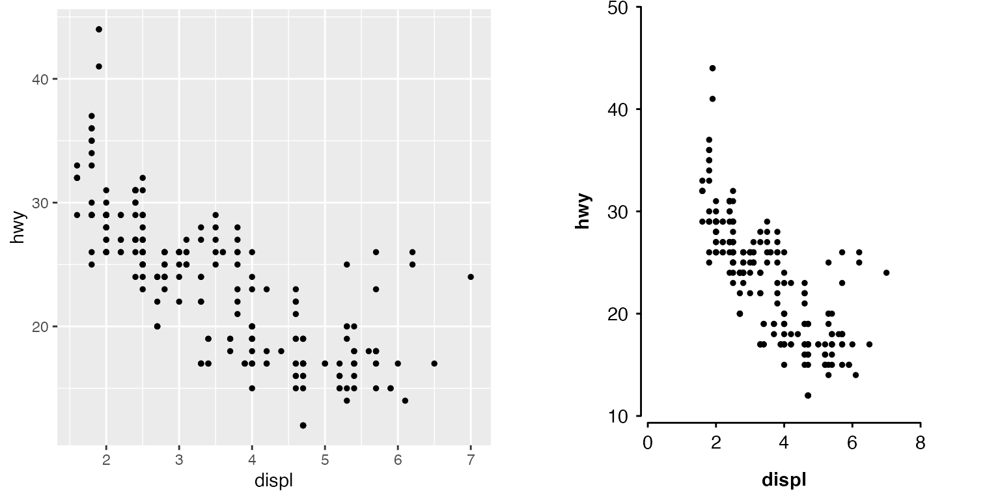

make_shape_plot() creates a plot of estimates and CIs against risk factor levels using the ggplot2 package. The function returns both a plot and the ggplot2 code used to create the plot. In RStudio the ggplot2 code used to create the plot will be shown in the Viewer pane (with syntax highlighting if the highlights package is installed).
The function uses plot_like_ckb() to modify the theme and control the look of the plot.
ckbplotr_shape_data
#> est se rf n is_female
#> 1 1.00 0.08 20.0 109 0
#> 2 1.25 0.03 28.0 103 0
#> 3 1.50 0.07 38.0 143 0
#> 4 1.75 0.15 50.0 104 0
#> 5 1.70 0.08 18.5 140 1
#> 6 1.85 0.08 25.0 134 1
#> 7 2.25 0.07 37.0 127 1
#> 8 2.60 0.10 47.0 99 1Given a data frame of estimates and standard errors (to be plotted on the y axis), and risk factor levels (to be plotted on the x axis), a plot can be created.
plot <- make_shape_plot(ckbplotr_shape_data[ckbplotr_shape_data$is_female == 0,],
col.x = "rf",
col.estimate = "est",
col.stderr = "se",
col.n = "n",
xlims = c(15, 50),
ylims = c(0.5, 3),
scalepoints = TRUE,
title = NULL)
#> Warning in sprintf("%s$", extension, ignore.case = TRUE): one argument not used
#> by format '%s$'
For more details on customising these forest plots, see “More with shape plots”.
make_forest_plot() creates a forest plot using the ggplot2 graphics package. The function returns both a plot and the ggplot2 code used to create the plot. In RStudio the code used to create the plot will be shown in the Viewer pane (with syntax highlighting if the highlights package is installed).
First of all, do your analyses and put the results into data frames (one data frame for each forest plot panel). Here we take subsets of the example data provided in the package.
resultsA <- dplyr::filter(ckbplotr_forest_data, name == "A")
resultsB <- dplyr::filter(ckbplotr_forest_data, name == "B")
head(resultsA[,c("variable", "estimate", "stderr", "n")])
#> variable estimate stderr n
#> 1 nmr_l_vldl_p 0.007652073 0.03020935 407
#> 2 nmr_m_vldl_p 0.006110668 0.02475996 1816
#> 3 nmr_s_vldl_p -0.028511316 0.04000646 812
#> 4 nmr_idl_p 0.004209247 0.01336079 938
#> 5 nmr_l_ldl_p 0.001505025 0.01589807 800
#> 6 nmr_m_ldl_p 0.011208151 0.02168255 423The panels argument is a list of data frames with results to be plotted, the col.key argument is the name of the column that defines which results should be plotted on the same row, and the exponentiate argument is a logical value telling the function we are providing estimates on the log scale.
By default, the function assumes that estimates and standard errors are in columns named “estimate” and “stderr”, but this can also be set by the col.estimate and col.stderr arguments.
forestplot <- make_forest_plot(panels = list(resultsA, resultsB),
col.key = "variable",
exponentiate = TRUE)
#> Warning in sprintf("%s$", extension, ignore.case = TRUE): one argument not used
#> by format '%s$'To use row labels, first create a data frame of labels. The data set must contain:
col.key.If a particular level of label is not required it can be set to missing.
head(ckbplotr_row_labels)
#> heading subheading label variable
#> 1 Lipoprotein particle concentration VLDL Large nmr_l_vldl_p
#> 2 Lipoprotein particle concentration VLDL Medium nmr_m_vldl_p
#> 3 Lipoprotein particle concentration VLDL Small nmr_s_vldl_p
#> 4 Lipoprotein particle concentration IDL <NA> nmr_idl_p
#> 5 Lipoprotein particle concentration LDL Large nmr_l_ldl_p
#> 6 Lipoprotein particle concentration LDL Medium nmr_m_ldl_pIn make_forest_plot() specify the row.labels argument as the data frame of labels you’ve created. Use the row.labels.levels argument to choose which columns are used as headings/subheadings/labels.
Use the rows argument to choose the results to be plotted. The first level (heading) labels will be included in the plot from top to bottom. Other labels will be in the order that they are in the row.labels data frame.
forestplot <- make_forest_plot(panels = list(resultsA, resultsB),
col.key = "variable",
row.labels = ckbplotr_row_labels,
row.labels.levels = c("heading", "subheading", "label"),
rows = c("Triglycerides concentration",
"Lipoprotein particle concentration"),
exponentiate = TRUE,
panel.headings = c("Analysis A", "Analysis B"),
xlim = c(0.9, 1.1),
xticks = c(0.9, 1, 1.1),
scalepoints = TRUE,
pointsize = 3)
#> Warning in sprintf("%s$", extension, ignore.case = TRUE): one argument not used
#> by format '%s$'In this plot we’ve also use the panel.headings, xlim, xticks, scalepoints, and pointsize arguments to customise the plot.
For more details on customising these forest plots, see “More with forest plots”.
Supply an existing ggplot2 plot as the plot argument to plot_like_ckb():
plot <- ggplot(data = mpg,
aes(x = displ, y = hwy)) +
geom_point(size = 1)
ckbplot <- plot_like_ckb(plot = plot,
xlims = c(0, 8),
ylims = c(10, 50))
gridExtra::grid.arrange(plot, ckbplot, ncol = 2)
See “Make any ggplot like a CKB plot” for more details.